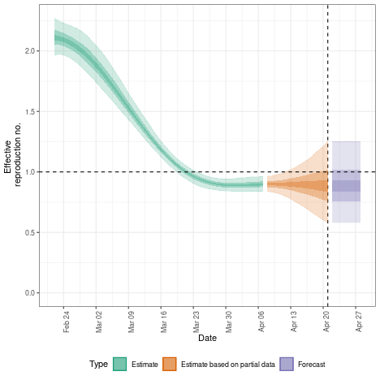
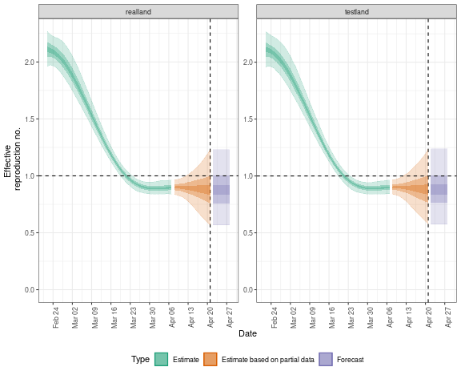
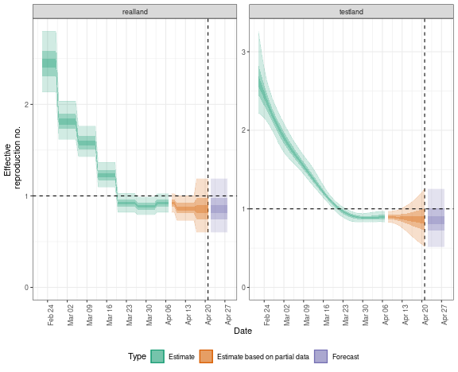

The EpiNow2 package contains functionality to run
estimate_infections() in production mode, i.e. with full
logging and saving all relevant outputs and plots to dedicated folders
in the hard drive. This is done with the epinow() function,
that takes the same options as estimate_infections() with
some additional options that determine, for example, where output gets
stored and what output exactly. The function can be a useful option
when, e.g., running the model daily with updated data on a
high-performance computing server to feed into a dashboard. For more
detail on the various model options available, see the Examples vignette, for more
on the general modelling approach the Workflow, and for
theoretical background the Model
definitions vignette
Running the model on a single region
To run the model in production mode for a single region, set the
parameters up in the same way as for estimate_infections()
(see the Workflow
vignette). Here we use the example delay and generation time
distributions that come with the package. This should be replaced with
parameters relevant to the system that is being studied.
library("EpiNow2")
#>
#> Attaching package: 'EpiNow2'
#> The following object is masked from 'package:stats':
#>
#> Gamma
options(mc.cores = 4)
reported_cases <- example_confirmed[1:60]
reporting_delay <- LogNormal(mean = 2, sd = 1, max = 10)
delay <- example_incubation_period + reporting_delay
rt_prior <- list(mean = 2, sd = 0.1)We can then run the epinow() function with the same
arguments as estimate_infections().
res <- epinow(reported_cases,
generation_time = generation_time_opts(example_generation_time),
delays = delay_opts(delay),
rt = rt_opts(prior = rt_prior)
)
#> Logging threshold set at INFO for the EpiNow2 logger
#> Writing EpiNow2 logs to the console and: /tmp/RtmpJDlhZu/regional-epinow/2020-04-21.log
#> Logging threshold set at INFO for the EpiNow2.epinow logger
#> Writing EpiNow2.epinow logs to the console and: /tmp/RtmpJDlhZu/epinow/2020-04-21.log
#> WARN [2024-05-10 07:52:36] epinow: There were 11 divergent transitions after warmup. See
#> https://mc-stan.org/misc/warnings.html#divergent-transitions-after-warmup
#> to find out why this is a problem and how to eliminate them. -
#> WARN [2024-05-10 07:52:36] epinow: Examine the pairs() plot to diagnose sampling problems
#> -
res$plots$R
The initial messages here indicate where log files can be found. If
you want summarised results and plots to be written out where they can
be accessed later you can use the target_folder
argument.
Running the model simultaneously on multiple regions
The package also contains functionality to conduct inference
contemporaneously (if separately) in production mode on multiple time
series, e.g. to run the model on multiple regions. This is done with the
regional_epinow() function.
Say, for example, we construct a dataset containing two regions,
testland and realland (in this simple example
both containing the same case data).
cases <- example_confirmed[1:60]
cases <- data.table::rbindlist(list(
data.table::copy(cases)[, region := "testland"],
cases[, region := "realland"]
))To then run this on multiple regions using the default options above, we could use
region_rt <- regional_epinow(
reported_cases = cases,
generation_time = generation_time_opts(example_generation_time),
delays = delay_opts(delay),
rt = rt_opts(prior = rt_prior),
)
#> Warning: The `reported_cases` argument of `regional_epinow()` is deprecated as of EpiNow2 1.5.0.
#> ℹ Please use the `data` argument instead.
#> ℹ The argument will be removed completely in the next version.
#> This warning is displayed once every 8 hours.
#> Call `lifecycle::last_lifecycle_warnings()` to see where this warning was generated.
#> INFO [2024-05-10 07:52:38] Producing following optional outputs: regions, summary, samples, plots, latest
#> Logging threshold set at INFO for the EpiNow2 logger
#> Writing EpiNow2 logs to the console and: /tmp/RtmpJDlhZu/regional-epinow/2020-04-21.log
#> Logging threshold set at INFO for the EpiNow2.epinow logger
#> Writing EpiNow2.epinow logs to: /tmp/RtmpJDlhZu/epinow/2020-04-21.log
#> INFO [2024-05-10 07:52:38] Reporting estimates using data up to: 2020-04-21
#> INFO [2024-05-10 07:52:38] No target directory specified so returning output
#> INFO [2024-05-10 07:52:38] Producing estimates for: testland, realland
#> INFO [2024-05-10 07:52:38] Regions excluded: none
#> INFO [2024-05-10 07:53:40] Completed estimates for: testland
#> INFO [2024-05-10 07:54:29] Completed estimates for: realland
#> INFO [2024-05-10 07:54:29] Completed regional estimates
#> INFO [2024-05-10 07:54:29] Regions with estimates: 2
#> INFO [2024-05-10 07:54:29] Regions with runtime errors: 0
#> INFO [2024-05-10 07:54:29] Producing summary
#> INFO [2024-05-10 07:54:29] No summary directory specified so returning summary output
#> INFO [2024-05-10 07:54:29] No target directory specified so returning timings
## summary
region_rt$summary$summarised_results$table
#> Region New infections per day Expected change in daily reports
#> <char> <char> <fctr>
#> 1: realland 2211 (921 -- 4610) Likely decreasing
#> 2: testland 2238 (980 -- 4646) Likely decreasing
#> Effective reproduction no. Rate of growth
#> <char> <char>
#> 1: 0.87 (0.57 -- 1.2) -0.036 (-0.16 -- 0.076)
#> 2: 0.88 (0.58 -- 1.2) -0.034 (-0.16 -- 0.076)
#> Doubling/halving time (days)
#> <char>
#> 1: -19 (9.2 -- -4.3)
#> 2: -20 (9.1 -- -4.4)
## plot
region_rt$summary$plots$R
If instead, we wanted to use the Gaussian Process for
testland and a weekly random walk for realland
we could specify these separately using the opts_list()
function from the package and modifyList() from
R.
gp <- opts_list(gp_opts(), cases)
gp <- modifyList(gp, list(realland = NULL), keep.null = TRUE)
rt <- opts_list(rt_opts(), cases, realland = rt_opts(rw = 7))
region_separate_rt <- regional_epinow(
reported_cases = cases,
generation_time = generation_time_opts(example_generation_time),
delays = delay_opts(delay),
rt = rt, gp = gp,
)
#> INFO [2024-05-10 07:54:30] Producing following optional outputs: regions, summary, samples, plots, latest
#> Logging threshold set at INFO for the EpiNow2 logger
#> Writing EpiNow2 logs to the console and: /tmp/RtmpJDlhZu/regional-epinow/2020-04-21.log
#> Logging threshold set at INFO for the EpiNow2.epinow logger
#> Writing EpiNow2.epinow logs to: /tmp/RtmpJDlhZu/epinow/2020-04-21.log
#> INFO [2024-05-10 07:54:30] Reporting estimates using data up to: 2020-04-21
#> INFO [2024-05-10 07:54:30] No target directory specified so returning output
#> INFO [2024-05-10 07:54:30] Producing estimates for: testland, realland
#> INFO [2024-05-10 07:54:30] Regions excluded: none
#> INFO [2024-05-10 07:56:06] Completed estimates for: testland
#> INFO [2024-05-10 07:56:24] Completed estimates for: realland
#> INFO [2024-05-10 07:56:24] Completed regional estimates
#> INFO [2024-05-10 07:56:24] Regions with estimates: 2
#> INFO [2024-05-10 07:56:24] Regions with runtime errors: 0
#> INFO [2024-05-10 07:56:24] Producing summary
#> INFO [2024-05-10 07:56:24] No summary directory specified so returning summary output
#> INFO [2024-05-10 07:56:24] No target directory specified so returning timings
## summary
region_separate_rt$summary$summarised_results$table
#> Region New infections per day Expected change in daily reports
#> <char> <char> <fctr>
#> 1: realland 2106 (1042 -- 4307) Likely decreasing
#> 2: testland 2128 (843 -- 4774) Likely decreasing
#> Effective reproduction no. Rate of growth
#> <char> <char>
#> 1: 0.86 (0.6 -- 1.2) -0.038 (-0.11 -- 0.046)
#> 2: 0.86 (0.52 -- 1.3) -0.038 (-0.18 -- 0.081)
#> Doubling/halving time (days)
#> <char>
#> 1: -18 (15 -- -6.3)
#> 2: -18 (8.6 -- -3.8)
## plot
region_separate_rt$summary$plots$R